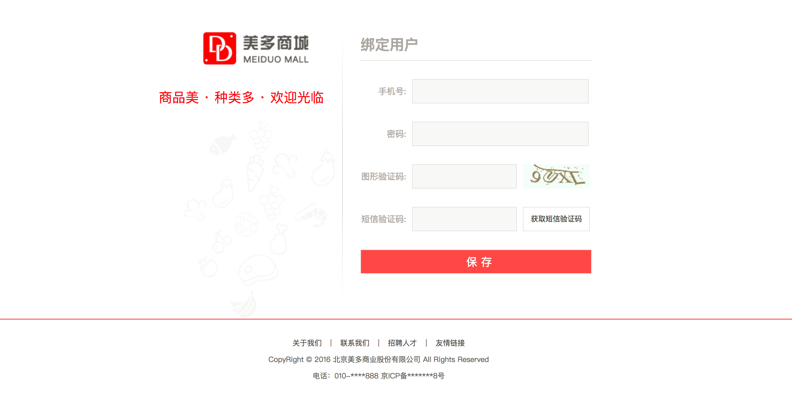

绑定用户身份接口
如果用户是首次使用QQ登录，则需要绑定用户，页面如下：

业务逻辑：
- 用户需要填写手机号、密码、图片验证码、短信验证码
- 如果用户未在美多商城注册过，则会将手机号作为用户名为用户创建一个美多账户，并绑定用户
- 如果用户已在美多商城注册过，则检验密码后直接绑定用户
后端接口设计
请求方式： POST /oauth/qq/user/
请求参数：
| 参数 | 类型 | 是否必须 | 说明 |
|---|---|---|---|
| mobile | str | 是 | 手机号 |
| password | str | 是 | 密码 |
| sms_code | str | 是 | 短信验证码 |
| access_token | str | 是 | 凭据 （包含openid) |
返回数据：
| 返回值 | 类型 | 是否必须 | 说明 |
|---|---|---|---|
| token | str | 是 | JWT token |
| user_id | int | 是 | 用户id |
| username | str | 是 | 用户名 |
在oauth/views.py中修改 QQTokenView的继承类,改为 GenericAPIView
from rest_framework_jwt.settings import api_settings
from rest_framework.generics import GenericAPIView
from .serializers import QQRegisterSerializer
import logging
logger = logging.getLogger('meiduo')
# Create your views here.
class QQTokenView(GenericAPIView):
"""
获取access_token
GET /oauth/qq/users/?code=xxx
POST /oauth/qq/users/
"""
serializer_class = QQRegisterSerializer
def get(self,request):
...
def post(self,request):
serializer = self.get_serializer(data=request.data)
serializer.is_valid(raise_exception=True)
user = serializer.save()
# 生成已登录的token
jwt_payload_handler = api_settings.JWT_PAYLOAD_HANDLER
jwt_encode_handler = api_settings.JWT_ENCODE_HANDLER
payload = jwt_payload_handler(user)
token = jwt_encode_handler(payload)
response = Response({
'token': token,
'user_id': user.id,
'username': user.username
})
return response
新建oauth/serializers.py文件，
#coding:utf8
from rest_framework import serializers
from .models import OAuthQQUser
from users.models import User
from django_redis import get_redis_connection
from rest_framework_jwt.settings import api_settings
class QQRegisterSerializer(serializers.Serializer):
"""
创建QQ关联数据和用户模型数据
"""
access_token = serializers.CharField(label='操作token')
mobile = serializers.RegexField(label='手机号',regex=r'^1[345789]\d{9}$')
password = serializers.CharField(label='密码',max_length=20,min_length=8)
sms_code = serializers.CharField(label='短信验证码',max_length=6,min_length=6)
def validate(self, attrs):
#验证access_token
access_token = attrs['access_token']
openid = OAuthQQUser.check_save_user_token(access_token)
if openid is None:
raise serializers.ValidationError('无效的token')
#注意,为attr,添加 openid数据,以备保存数据使用
attrs['openid'] = openid
#验证短信码
mobile = attrs['mobile']
redis_conn = get_redis_connection('code')
redis_code = redis_conn.get('sms_%s'%mobile)
if redis_code.decode() != attrs['sms_code']:
raise serializers.ValidationError('验证码错误')
# 判断手机号是否被注册(即 是否是注册用户)
try:
user = User.objects.get(mobile=mobile)
except User.DoesNotExist:
pass
else:
#没有异常,也就是用户已经注册过
#判断用户的密码.
password = attrs['password']
if not user.check_password(password):
raise serializers.ValidationError('密码错误')
#将用户数据保存,以备保存数据使用
attrs['user'] = user
return attrs
在OAuthQQUser模型类中增加
from django.db import models
from utils.models import BaseModel
from itsdangerous import TimedJSONWebSignatureSerializer as Serializer,BadData
from mall import settings
class OAuthQQUser(BaseModel):
"""
QQ登录用户数据
"""
...
@staticmethod
def check_save_user_token(token):
serializer = Serializer(settings.SECRET_KEY, 3600)
try:
result = serializer.loads(token)
except BadData:
return None
return result.get('openid')
新建oauth/serializers.py文件中重写create方法,实现数据入库操作
def create(self, validated_data):
#判断数据中是否有 user
user = validated_data.get('user')
if not user:
# 不存在,就创建用户数据
user = User.objects.create(
username = validated_data.get('mobile'),
password = validated_data.get('password'),
mobile = validated_data.get('mobile')
)
#修改密码
user.set_password(validated_data['password'])
user.save()
# 保存QQ授权数据
OAuthQQUser.objects.create(
openid = validated_data.get('openid'),
user = user
)
return user
前端
在oauth_callback.js中实现
// 保存
on_submit: function(){
this.check_pwd();
this.check_phone();
this.check_sms_code();
if(this.error_password == false && this.error_phone == false && this.error_sms_code == false) {
axios.post(this.host + '/oauth/qq/users/', {
password: this.password,
mobile: this.mobile,
sms_code: this.sms_code,
access_token: this.access_token
}, {
responseType: 'json',
})
.then(response => {
// 记录用户登录状态
sessionStorage.clear();
localStorage.clear();
localStorage.token = response.data.token;
localStorage.user_id = response.data.user_id;
localStorage.username = response.data.username;
location.href = this.get_query_string('state');
})
.catch(error=> {
if (error.response.status == 400) {
this.error_sms_code_message = error.response.data.message;
this.error_sms_code = true;
} else {
console.log(error.response.data);
}
})
}
}